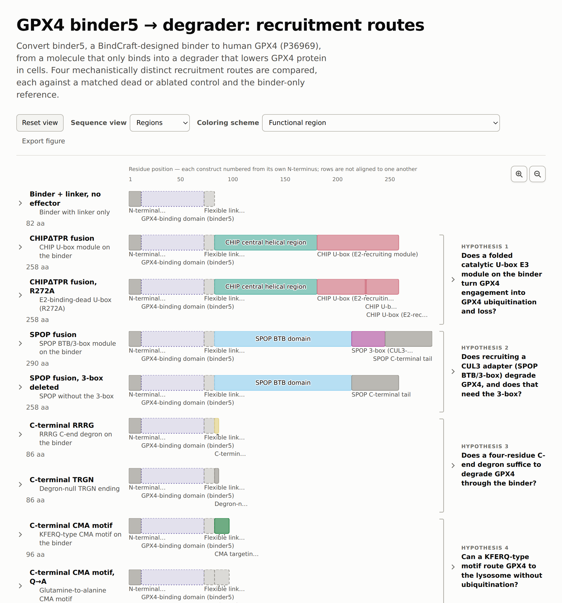

GPT 6.1 sol (high)
10 constructs (4 candidates, 5 controls, 1 reference) · 4 hypotheses · 8 cited sources, 8 checked against their identifiers
Construct Maps / GPX4: from binder to degrader
How can a designed binder to human GPX4 be turned into a degrader that removes GPX4 rather than only binding it?
Design a library of constructs to turn binder5, a BindCraft-designed binder to human GPX4 (P36969), into a degrader that removes GPX4 rather than only binding it. Only use literature published before 2026-01-01.
Zhang SH, An Y, Zeng N, Liu MC, Sun JX, Gong X, Xu JZ, Wang SG, Xia QD. Degrading GPX4 via biomimetic nanoparticle-mediated in situ synthesis of deep-learning-designed binder-degron chimeras for prostate cancer therapy. Advanced Science 2026. 10.1002/advs.77932
| Tested in the paper | GPT 6.1 sol (high) | Claude Sonnet 5.5 (high) |
|---|---|---|
| binder5, the designed binderResults: De Novo Design and Validation of Binders Targeting GPX4; Figure 2 | Same edit D01binder alone | Same edit refthe binder with a linker |
| The binder fused to a C-terminal degron (bdC, binder5–RFLGGREE)Results: Construction of Binder-Degron Chimeras; Figure 3 | Related D02 D04an RRRG tail, and a KLHDC2-recognition tail | Related rrrgan RRRG C-end degron |
| A degron-mutant control of the same composition (bdCm, RFGLGEER)Methods: Ubiquitination Assay; Results: Construction of Binder-Degron Chimeras | Related D03a TRGN control tail | Related trgna degron-null TRGN ending |
| A peptide-PROTAC: binder5 joined to the VHL ligand ALAPYIP (p-TAC)Results: Construction of Binder-Degron Chimeras | Related D08recruits an E3 through a fused CHIP module | Related chip spoprecruits an E3 through a fused CHIP or SPOP module |
✓ the same edit · ~ related, a different change at the same place or the same idea · – not proposed. Constructs are named as in each library's record.
10 constructs (4 candidates, 5 controls, 1 reference) · 4 hypotheses · 8 cited sources, 8 checked against their identifiers

9 constructs (4 candidates, 4 controls, 1 reference) · 4 hypotheses · 26 cited sources, 25 checked against their identifiers